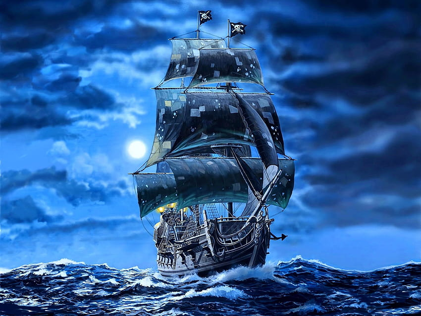
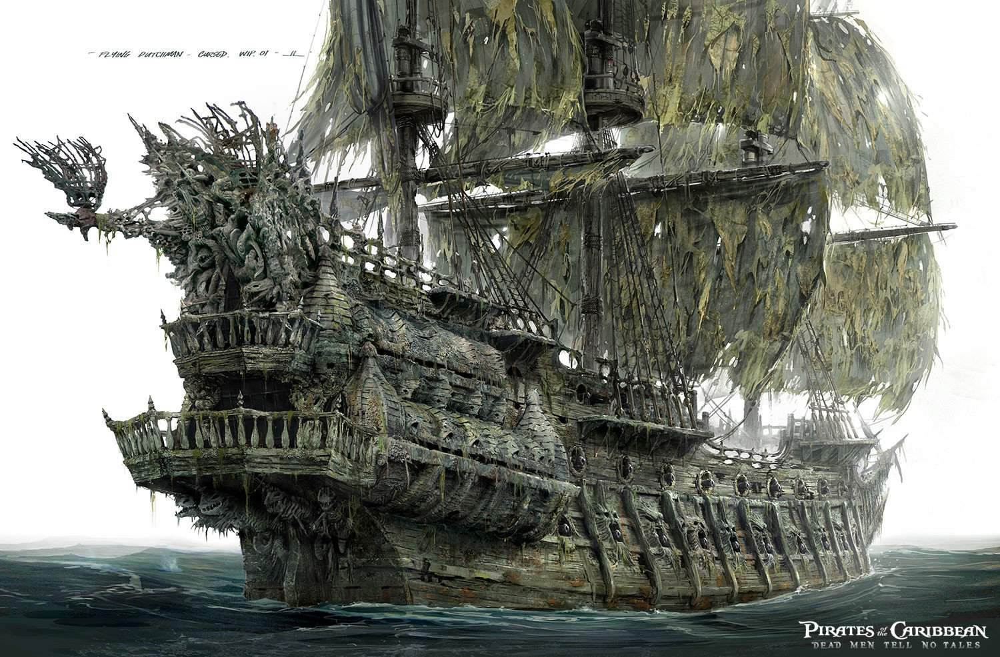
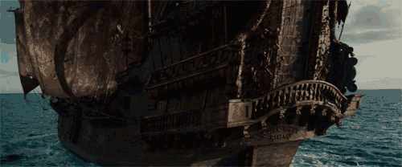
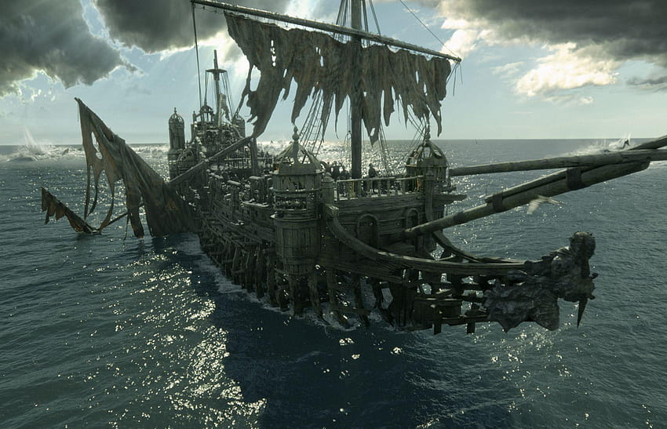

Barcos mas importantes
El perla Negra
El Perla Negra es un barco pirata particularmente conocido por su velocidad y sus velas negras. Es el barco de Jack Sparrow, incluso si fue capitaneado durante muchos años por Hector Barbossa.
Todos lo conocemos como LA Perla Negra, pero originalmente se llamaba La Jovencita Traviesa. Fue construido por el mejor carpintero de Inglaterra, en Londres, con un diseño especial que le permitía ir especialmente rápido para esquivar a los piratas y transportar a los esclavos. En algún momento, cuando Jack Sparrow dejó la piratería, trabajó como capitán en La Jovencita Traviesa, y tuvo la necesidad de fugarse con el y volver a la delincuencia asaltando varios barcos en el mediterráneo, pero poco después cazaron a Jack junto con La Jovencita. Jack consiguió escapar, pero el barco se incendió y se hundió en el puerto. Sparrow amaba a ese barco, así que se decidió por hacer un trato con el diablo del mar, Davy Jones, para elevarlo a la superficie a cambio del alma de Jack, que sería pagada dentro de 13 años de capitanía, con 100 años al servicio del Holandés Errante.
Cuando Jack Sparrow recuperó su preciado barco el sabía que lo reconocerían y lo volverían a hundir, así que lo reparó, lo pinto completamente de negro y lo rebautizó como La Perla Negra. Entonces Jack, abordo de La Perla Negra, fue a Tortuga y contrató a una tripulación en la que se encontraba Hector Barbosa y fueron tras un tesoro azteca del que Jack conocía su ubicación.
A los tres días de embarcarse en La Perla Negra para buscar el tesoro azteca de "La Isla de Muerta" el primer oficial de Jack, el capitán Barbossa, y su tripulación se amotinaron, abandonaron a Jack en una isla con una pistola cargada con una bala, y robaron el oro azteca de la Isla de Muerta, que les trajo consigo una maldición. A partir de ese momento, la tripulación de La Perla Negra capitaneado por Hector Barbossa viajó durante 10 años destruyendo barcos en busca de las piezas de oro que malgastaron en comida, licor y placeres. La Perla Negra era temida por todos, se decía que era una navío fantasma tripulado por almas en pena y capitaneada por un hombre tan malvado que había sido expulsado del propio infierno.
El Holandes Errante
El Holandés Errante es un poderoso barco fantasma, el más temido del mundo, su casco está hecho con los cuerpos de los marineros que mueren en el mar y está completamente lleno de moluscos y vida marina porque pasa la mayoría de su larga travesía navegando por debajo del agua, sus velas están mohosas y hechas jirones.
Cuando Jones se enamoró de Calypso, esta le encomendó la misión de transportar a los muertos en alta mar y le entregó este barco. Cuando Jones volvió a pisar tierra no encontró a Calypso así que se encargó de asesinar a personas con este barco fantasma.
Alguna de las características son:
- Está hecho con cadáveres de marineros
- Puede navegar bajo el agua, sumergirse y salir a flote a placer.
- Su tripulación son extraños seres marinos/humanos.
- Tiene un llamadero con el cual puede llamar al Kraken.
- Tiene 38 cañones laterales y 2 cañones triples en la proa.
- En el camarote del capitán hay un gran órgano.
HMS Endeavour

Es capitaneado por el Vicealmirante Steven Jormo, quien tras la muerte del almirante Norrington es ascendido, pasando a ser nombrado en la última batalla Almirante General de la Armada. Sin embargo, en el transcurso de la película el navío es mandado por Lord Cutler Beckett, embajador, representante y jefe de la Compañía Británica de las Indias Orientales en el Caribe.
El navío fue construido en Jamaica en el año 1702 para la Marina Real Británica. En 1721, cuando el Mar Caribe pasó a ser controlado por la Compañía de las Indias Orientales, el barco quedó a disposición de la compañía y por ende a manos de Lord Cutler Beckett. Fue uno de los más grandes navíos que tuvo la Marina Real y el más grande de todo el Caribe.
El navío tenía tres puentes y cuatro baterías. La capacidad era para 1090 personas aunque durante las batallas era de 1147. Las tecnologías en el navío eran muy avanzadas pero los tripulantes seguían con la misma dejadez. En cambio los camarotes de los oficiales mayores superiores (Almirante, capitán de navío, teniente general, Jefe de navío y Vicealmirante), aunque dormían con literas eran mejor que el de los tripulantes, que dormían todos juntos en hamacas. Había un camarote (el Camarote del capitán / el del supremo general), que tenía dos camas separadas que eran para los oficiales de gran nivel, Lores y personas de gran prestigio social. El navío poseía 122 cañones aunque solo se utilizaban 112; los otros eran de reserva (su capacidad era muy grande pero no se usaba en su totalidad ya que era un navío de guerra).
Venganza de la Reina Ana
El Venganza de la Reina Ana es un barco pirata que fue el buque insignia del infame pirata Barbanegra y despues de Hector Barbossa.
Este barco fue construido en Bristol en 1710 con el nombre de Concorde. Al año siguiente fue capturado por los franceses y pasó a llamarse La Concorde de Nantes. En 1717, el barco fue capturado por Barbanegra y sus piratas y pasó a llamarse "Venganza de la Reina Ana" (en inglés "Queen Anne's Revenge"). Barbanegra usó El Venganza como su buque insignia durante menos de un año, pero con ella logró capturar numerosos barcos. La venganza de la reina Ana encalló y fue abandonada en Beaufort Inlet, Carolina del Norte. En 1718, después de ser derrotado en la batalla de Ocracoke, Barbanegra regresó al naufragio de la Venganza que había reparado y luego lo usó nuevamente como un buque insignia y reconstruyó una reputación.
En 1750, Barbanegra emprendió un viaje para encontrar la legendaria Fuente de la Juventud, llevando al pirata Jack Sparrow como prisionero a bordo de la Venganza, ya que era el único que conocía la ubicación de la Fuente. Tras la muerte de Barbanegra, el Venganza de la Reina Ana quedó bajo el mando de Hector Barbossa.
El barco se convirtió en el buque insignia de la flota del capitán Barbossa, convirtiéndose en uno de los barcos de vela más ricos que jamás había navegado por los mares. En 1751, durante el ataque de Armando Salazar y su grupo de fantasmas, Barbossa se reunió con Salazar y le prometió llevarlo a Jack Sparrow a cambio de su vida. Salazar aceptó, pero obligó a Barbossa y su tripulación a abandonar la Venganza y navegar con él a bordo del Silent Mary. El Venganza de la Reina Ana fue abandonada en alta mar a merced de las olas y los vientos.
Rodeada de 15 cañones en los laterales y picas con huesos humanos, la fragata mas temida y maquiavélica es de Barbanegra, quien capturó el barco "La Venganza De La Reina Ana" como trofeo al ganar una batalla, y lo personalizó. La leyenda dice que el barco fue construido por sus víctimas, pero si alguien se fija, se puede ver que en realidad está hecho "con" ellas. Su cubierta exterior es más dura. El camarote de Barbanegra tiene una enorme vidriera demoníaca, con algunas cortinas y tres grandes lámparas de aceite ballena. Los cañones no son su única arma, en el mascarón de proa tiene un esqueleto ardiente atado con cadenas que puede disparar fuego, quemando el barco al que apunta.
Silent Mary
El Silent Mary (Sigilosa María) era un navío comandado por el Capitán Armando Salazar pero el barco junto a su capitán y tripulación fue destruido. era un Navío de Línea equipado con 44 cañones de izquierda a derecha, 2 cañones en las primeras torretas y 4 en las torretas secundarias (16 en total) y 14 cañones en la popa.
El Silent Mary fue un Navío de Línea de la Armada Real Española que navegó en el Caribe durante la Era de la Piratería. Muy especialmente comandado por el Capitán Armando Salazar, ella era el orgullo de la Armada Española y su barco de caza de piratas más temido. Durante una de sus misiones, el Silent Mary se perdió en las aguas misteriosas del Triángulo del Diablo, pero después de años de prisión regresó a los Siete Mares transformados en un espectro aterrador tripulado por fantasmas.
Su misión principal era buscar y destruir a los piratas de los mares. Con cien cañones, tripulados por marineros bien entrenados y leales a la Corona Española, y capitaneados por un condecorado oficial Armando Salazar, el Silent Mary pronto fue conocido como el barco pirata más temido de su tiempo. En una ocasión el Silent Mary se encontraba rodeada por una flota pirata de diez naves. Aunque los españoles fueron superados en número, el poder de fuego del Silent Mary y las habilidades de su tripulación fueron muy superiores a los de los barcos piratas y sus tripulaciones. En una feroz batalla, los españoles hundieron a la mayor parte de la flota, y el Silent Mary evadió cualquier daño grave. Pronto, casi todos los barcos piratas no eran más que restos de naufragios.